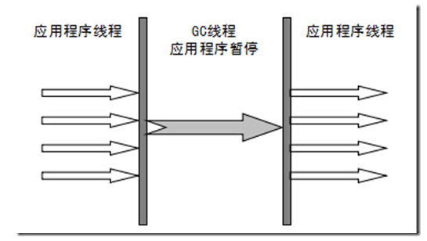
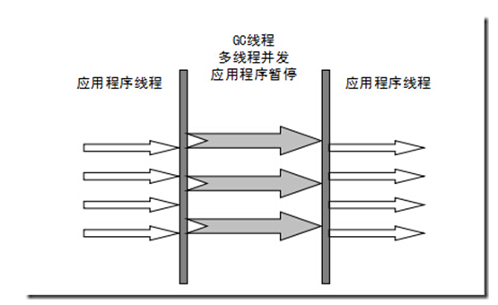
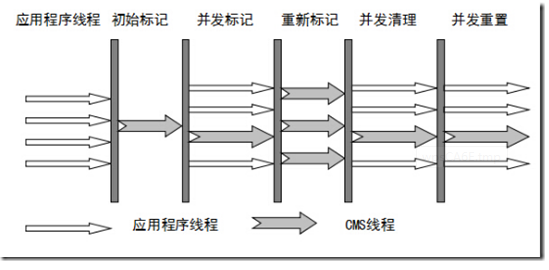

<!DOCTYPE html>


<html lang="en">


<head>
  <meta charset="utf-8" />
   
  <meta name="keywords" content="学习" />
   
  <meta name="description" content="G.zero的个人博客" />
  
  <meta name="viewport" content="width=device-width, initial-scale=1, maximum-scale=1" />
  <title>
    垃圾回收器算法的实现 |  yang-blog
  </title>
  <meta name="generator" content="hexo-theme-ayer">
  
  <link rel="shortcut icon" href="/favicon.ico" />
  
  
<link rel="stylesheet" href="/dist/main.css">

  
<link rel="stylesheet" href="https://cdn.jsdelivr.net/gh/Shen-Yu/cdn/css/remixicon.min.css">

  
<link rel="stylesheet" href="/css/custom.css">

  
  
<script src="https://cdn.jsdelivr.net/npm/pace-js@1.0.2/pace.min.js"></script>

  
  

  

</head>

</html>

<body>
  <div id="app">
    
      
    <main class="content on">
      <section class="outer">
  <article
  id="post-jvm/java-jvm-gc-algorithm-1"
  class="article article-type-post"
  itemscope
  itemprop="blogPost"
  data-scroll-reveal
>
  <div class="article-inner">
    
    <header class="article-header">
       
<h1 class="article-title sea-center" style="border-left:0" itemprop="name">
  垃圾回收器算法的实现
</h1>
 

    </header>
     
    <div class="article-meta">
      <a href="/2019/05/27/jvm/java-jvm-gc-algorithm-1/" class="article-date">
  <time datetime="2019-05-27T07:49:28.000Z" itemprop="datePublished">2019-05-27</time>
</a> 
  <div class="article-category">
    <a class="article-category-link" href="/categories/JAVA-JVM/">JAVA_JVM</a>
  </div>
  
<div class="word_count">
    <span class="post-time">
        <span class="post-meta-item-icon">
            <i class="ri-quill-pen-line"></i>
            <span class="post-meta-item-text"> Word count:</span>
            <span class="post-count">2.7k</span>
        </span>
    </span>

    <span class="post-time">
        &nbsp; | &nbsp;
        <span class="post-meta-item-icon">
            <i class="ri-book-open-line"></i>
            <span class="post-meta-item-text"> Reading time≈</span>
            <span class="post-count">9 min</span>
        </span>
    </span>
</div>
 
    </div>
      
    <div class="tocbot"></div>


  
    <div class="article-entry" itemprop="articleBody">
       
  <h2 id="HOTSPOT算法实现"><a href="#HOTSPOT算法实现" class="headerlink" title="HOTSPOT算法实现"></a>HOTSPOT算法实现</h2><h3 id="枚举根节点"><a href="#枚举根节点" class="headerlink" title="枚举根节点"></a>枚举根节点</h3><p>GC Roots主要在全局性的引用（例如常量或者类静态属性）与执行上下文（例如栈帧中的本地变量表）中，java进行可达性分析时，对执行时间的敏感还体现在GC停顿上，因为分析工作必须在一个能确保一致性（分析过程中对象引用关系不能再不断变化）的快照中进行，这点是导致GC进行时必须停顿所有的java执行线程的一个重要原因。即使是在GMS收集器中，枚举枚举根节点也要停顿。</p>
<p>在HotSpot中使用OopMap的数据结构来保存对象的引用，从而在执行分析时不需要一个不漏的检查完所有的执行上下文和全局的引用位置，在类加载完成的时候，HotSpot就把对象内什么偏移量上是什么类型的数据计算出来，在JIT编译过程中，也会在特定的位置记录下栈和寄存器中哪些位置是引用。</p>
<h3 id="安全点"><a href="#安全点" class="headerlink" title="安全点"></a>安全点</h3><p>HotSpot没有为每条指令都生成OopMap，只是在特定的位置记录了这些信息，就是安全点（SafePoint）。即程序执行时并非在所有的地方都要停顿下来开始GC，只有到达安全点才能暂停。<br>SafePoint选定太少会让gc等待时间太长，太多会增加运行时的负荷。</p>
<p>所以安全点的选定基本是以程序“是否具有让程序长时间执行的特征”为标准进行选定的-因为每条指令执行时间都非常短暂，程序不太可能因为指令流长度太长这个原因而过长时间运行。“长时间执行”的最明显特征就是指令序列复用，例如方法调用，循环跳转，异常跳转等，所有具有这些功能的指令才会产生SafePoint。</p>
<p>对于SafePoint，另一个需要考虑的问题是如何在GC发生时让所有线程都跑到最近的安全点上在停顿下来。有两个方案：</p>
<ul>
<li>抢先式中断</li>
</ul>
<p>不需要线程的执行代码主动去配合，在GC发生时，首先把所有线程全部中断，如果发现有线程中断的地方不在安全点上，就恢复线程，让它跑到安全点上。</p>
<ul>
<li>主动式中断</li>
</ul>
<p>当GC需要中断线程的时候，不直接对线程操作，仅设置一个标志，各个线程执行时主动去轮询这个标志，发现中断标志位真就自己中断挂起。轮询标志的地方和安全点是重合的，另外在加上创建对象需要分配内存的地方。</p>
<h3 id="安全区域"><a href="#安全区域" class="headerlink" title="安全区域"></a>安全区域</h3><p>安全区域是指在一段代码片段之中，引用关系不会发生变化。在这个区域中的任意地方开始GC都是安全的。<br>在线程执行到安全区域中的代码时，首先标识自己进入了安全区域，当在这段时间里JVM要发起GC时，就不用管标识自己为安全区域状态的线程了，在线程要离开安全区域，要检查是否已经完成了根节点枚举，如果完成了那现场就继续执行，否则必须等待直到收到可以离开安全区域的信号位置。</p>
<h2 id="垃圾收集器"><a href="#垃圾收集器" class="headerlink" title="垃圾收集器"></a>垃圾收集器</h2><p>收集算法是内存回收的方法理论，垃圾收集器就是内存回收的具体实现。java虚拟机规范没有对垃圾收集器如何实现有规定，因此不同厂商、版本提供的垃圾收集器可能大不相同。</p>
<blockquote>
<p><font color='green'>Serial(/sɪəriəl/)收集器</font></p>
</blockquote>
<p>Serial 收集器是最基本、历史最悠久的收集器。这个收集器是一个单线程的收集器，单线程的意义不仅仅说明它是只会使用一个CPU或一条收集线程去完成垃圾收集工作，更重要的是它进行垃圾收集时，必须暂停其他所有的工作线程，直到收集完成。</p>
<p></p>
<p>目前为止，Serial依然是虚拟机运行在Client模式下的默认新生代收集器。<br>优点：<br>简单，高效。对于限定单个CPU的环境来说，Serial收集器由于没有线程交互的开销，专心做垃圾收集自然可以获得最高的单线程收集小路。</p>
<blockquote>
<p><font color='green'>ParNew收集器</font></p>
</blockquote>
<p>parNew收集器其实就是Serial收集器的多线程版本，HotSpot第一款真正意义上的并发收集器</p>
<p></p>
<p>参数：</p>
<ul>
<li>-XX:+UseConcMarkSweepGC：选择后的默认新生代收集器</li>
<li>-XX:+UserParNewGC:强制指定</li>
<li>-XX:ParallelGCThreads：限制垃圾收集线程数</li>
</ul>
<blockquote>
<p><font color='green'>Parallel Scavenge收集器</font></p>
</blockquote>
<p>新生代收集器、使用复制算法、并行的多线程收集器。</p>
<p>特点：<br>关注点与其他收集器不同。CMS等收集器关注点是尽可能的缩短垃圾回收时用户线程停顿的时间，而Parallel Scavenge收集器目的则是达到一个可控制的吞吐量。吞吐量就是CPU运行用户代码时间与CPU总消耗时间的比值，即吞吐量=运行代码时间/(运行代码时间+垃圾收集时间)。</p>
<p>停顿时间越短越适合需要与用户交互的程序，良好的响应速度能提升用户体验，而高吞吐量则可以高效的利用CPU时间，尽快完成程序的运算任务，主要适合后台运算而不需要太多交互的任务。</p>
<p>参数：</p>
<ul>
<li>-XX:MaxGCPauseMillis:控制最大垃圾收集停顿时间</li>
</ul>
<p>参数值是一个大于0的毫米数，收集器尽可能保证内存回收花费的时间不超过设定值。不是说参数调至越小垃圾收集的时间越快，GC停顿时间压缩是以牺牲吞吐量和新生代空间来换取的。</p>
<ul>
<li><p>-XX:GCTimeRatil:设置吞吐量大小<br>参数值是一个大于0且小于100的整数，也就是垃圾收集时间占总时间的比率，相当于吞吐量倒数，如果参数设置为19，那么预先的最大GC时间占总时间的5%（1/(1+19)）,默认为99，就是允许最大1%（1/(1+99)）的垃圾收集时间。</p>
</li>
<li><p>-XX:UseAdaptiveSizePolicy:这个一个开关参数，打开后，不需要手动指定新生代的大小、Eden和Survivor区的比例，晋升老年代对象年龄等细节参数，会动态调整这些参数以提供最适合的停顿时间或者最大的吞吐量。</p>
</li>
</ul>
<blockquote>
<p><font color='green'>Serial Old 收集器</font></p>
</blockquote>
<p>Serial Older 是 Serial 收集器的老年代版本，同样是一大单线程收集器，使用标记-整理算法。</p>
<blockquote>
<p><font color='green'>Parallel Old 收集器</font></p>
</blockquote>
<p>Parallel Old 是 Parallel Scavenge 收集器的老年代版本，使用多线程和标记-整理算法。</p>
<blockquote>
<p><font color='green'>CMS 收集器</font></p>
</blockquote>
<p>CMS(Concurent Mark Sweep)收集器是一种以获取最短回收停顿时间为目标的收集器。目前java集中在互联网网站或者B/S系统服务端，比较重视服务响应时间，给用户带来比较好的体验，CMS非常服务符合这类需求。</p>
<p>CMS采用标记-清除算法，整个步骤包括：</p>
<ul>
<li>初始标记（CMS initial mark）<br>仅仅标记一下GC Roots能直接关联到的对象，速度很快。</li>
<li>并发标记（CMS concurrent mark）<br>进行GC Roots Tracing的过程</li>
<li>重新标记（CMS remark）<br>为了修正并发标记期间因用户程序继续运作而导致标志产生变动的那一部分对象的标记记录，这个阶段停顿时间一般会比初始化阶段稍长一些，但远比并发标记的时间短。</li>
<li>并发清除（CMS concurrent sweep）</li>
</ul>
<p>初始标记和重新标记步骤任然需要“stop the world”。整个过程中耗时比较长的并发标记和并发清除过程是与用户线程一起工作的。</p>
<p></p>
<p><strong>优点</strong><br>并发收集，低停顿</p>
<p><strong>缺点</strong></p>
<ul>
<li>对CPU资源非常敏感<br>并发阶段，它不会导致用户线程停顿，但是会因为占用了一部分线程而导致应用程序变慢，总吞吐会降低。</li>
<li>无法处理浮动垃圾，可能出现“Concurrent Mode Failure”失败而导致另一次 Full GC。</li>
<li>产生大量空间碎片 </li>
</ul>
<blockquote>
<p><font color="green">G1收集器</font></p>
</blockquote>
<p>G1是面向服务端的垃圾收集器。</p>
<p><strong>特点</strong></p>
<ul>
<li>并行与并发<br>充分利用多CPU多核环境下的硬件优势，缩短stop the world停顿时间。</li>
<li>分代收集</li>
<li>空间整合<br>G1 从整体来看基于标记-整理算法实现，从局部看基于复制算法实现，运行期间不会产生内存碎片。</li>
<li>可预测的停顿</li>
</ul>
<p><strong>步骤</strong></p>
<ul>
<li>初始标记</li>
<li>并发标记</li>
<li>最终标记</li>
<li>筛选回收</li>
</ul>
<p>初始标记仅仅是标记下GC Roots能直接关联到的对象，并且修改TAMS（next top at mark start）的值，让下一阶段用户程序并发运行时，能在正确可用的Region中创建新对象，这一阶段需要停顿线程。<br>并发标记是从GC Roots开始对堆中对象进行可达性分析，找到存活的对象，这段耗时长，但可与用户程序并发执行。<br>最终标记是为了修正并发标记期间因用户程序继续运作而导致标记发生变化的那一部分标记记录。<br>筛选回收首先对各个Region的回收价值和成本进行排序，根据用户所期望的GC停顿时间来制定回收计划。</p>
<h2 id="理解GC日志"><a href="#理解GC日志" class="headerlink" title="理解GC日志"></a>理解GC日志</h2><p>下面是一段GC日志：</p>
<p></p>
<p>“33.125：” 和 “100.67：” 代表GC发生的时间，是从java虚拟机启动以来经过的描述。</p>
<p>“[GC”和”[Full GC” 说明这次垃圾收集的停顿类型，而不是用来区分新生代还是老年代GC的。有 Full 说明这次GC是发生了“stop  the world”的。</p>
<p>“[DefNew”、”[Tenured”、”[Perm”标识GC发生区域，这里显示的区域名和使用的GC收集器是密切相关的。如果使用Serial收集器中的新生代名称”Default New Generation”，显示”[DefNew”。如果使用ParNew,则为”[Tenured”，使用Parallel Scavenge收集器，那它配套的新生代名称为”PSYoungGen” 老年代和永久代同理，名称由收集器决定。</p>
<p>“3324K-&gt;152K(3712k)”表示 GC前该内存区域已使用容量 -&gt; GC 后该内存区域已使用容量（该内存区域总容量）。</p>
<p>方括号之外的”3324K-&gt;152K(11904)” 表示 GC前java堆已使用容量-&gt;GC 后该java堆已使用容量（java堆总容量）。<br>“0.0025925 secs”表示内存区域GC所占用的时间，单位秒。</p>
 
      <!-- reward -->
      
    </div>
    

    <!-- copyright -->
    
    <footer class="article-footer">
       
<div class="share-btn">
      <span class="share-sns share-outer">
        <i class="ri-share-forward-line"></i>
        分享
      </span>
      <div class="share-wrap">
        <i class="arrow"></i>
        <div class="share-icons">
          
          <a class="weibo share-sns" href="javascript:;" data-type="weibo">
            <i class="ri-weibo-fill"></i>
          </a>
          <a class="weixin share-sns wxFab" href="javascript:;" data-type="weixin">
            <i class="ri-wechat-fill"></i>
          </a>
          <a class="qq share-sns" href="javascript:;" data-type="qq">
            <i class="ri-qq-fill"></i>
          </a>
          <a class="douban share-sns" href="javascript:;" data-type="douban">
            <i class="ri-douban-line"></i>
          </a>
          <!-- <a class="qzone share-sns" href="javascript:;" data-type="qzone">
            <i class="icon icon-qzone"></i>
          </a> -->
          
          <a class="facebook share-sns" href="javascript:;" data-type="facebook">
            <i class="ri-facebook-circle-fill"></i>
          </a>
          <a class="twitter share-sns" href="javascript:;" data-type="twitter">
            <i class="ri-twitter-fill"></i>
          </a>
          <a class="google share-sns" href="javascript:;" data-type="google">
            <i class="ri-google-fill"></i>
          </a>
        </div>
      </div>
</div>

<div class="wx-share-modal">
    <a class="modal-close" href="javascript:;"><i class="ri-close-circle-line"></i></a>
    <p>扫一扫，分享到微信</p>
    <div class="wx-qrcode">
      
    </div>
</div>

<div id="share-mask"></div>  
  <ul class="article-tag-list" itemprop="keywords"><li class="article-tag-list-item"><a class="article-tag-list-link" href="/tags/JVM/" rel="tag">JVM</a></li></ul>

    </footer>
  </div>

   
  <nav class="article-nav">
    
      <a href="/2019/05/28/jvm/java-jvm-gc-memory/" class="article-nav-link">
        <strong class="article-nav-caption">上一篇</strong>
        <div class="article-nav-title">
          
            java内存分配与回收策略
          
        </div>
      </a>
    
    
      <a href="/2019/05/27/jvm/java-jvm-gc-algorithm/" class="article-nav-link">
        <strong class="article-nav-caption">下一篇</strong>
        <div class="article-nav-title">垃圾收集算法</div>
      </a>
    
  </nav>

   
<!-- valine评论 -->
<div id="vcomments-box">
  <div id="vcomments"></div>
</div>
<script src="//cdn1.lncld.net/static/js/3.0.4/av-min.js"></script>
<script src="https://cdn.jsdelivr.net/npm/valine@1.4.14/dist/Valine.min.js"></script>
<script>
  new Valine({
    el: "#vcomments",
    app_id: "chaSYi8FMdJBwzIBpxeNjqWC-gzGzoHsz",
    app_key: "PqqkLYgPkHvH1BmyQqySWnSK",
    path: window.location.pathname,
    avatar: "monsterid",
    placeholder: "给我的文章加点评论吧~",
    recordIP: true,
  });
  const infoEle = document.querySelector("#vcomments .info");
  if (infoEle && infoEle.childNodes && infoEle.childNodes.length > 0) {
    infoEle.childNodes.forEach(function (item) {
      item.parentNode.removeChild(item);
    });
  }
</script>
<style>
  #vcomments-box {
    padding: 5px 30px;
  }

  @media screen and (max-width: 800px) {
    #vcomments-box {
      padding: 5px 0px;
    }
  }

  #vcomments-box #vcomments {
    background-color: #fff;
  }

  .v .vlist .vcard .vh {
    padding-right: 20px;
  }

  .v .vlist .vcard {
    padding-left: 10px;
  }
</style>

 
     
</article>

</section>
      <footer class="footer">
  <div class="outer">
    <ul>
      <li>
        Copyrights &copy;
        2020
        <i class="ri-heart-fill heart_icon"></i> G.zero
      </li>
    </ul>
    <ul>
      <li>
        
        
        
        Powered by <a href="https://hexo.io" target="_blank">Hexo</a>
        <span class="division">|</span>
        Theme - <a href="https://github.com/Shen-Yu/hexo-theme-ayer" target="_blank">Ayer</a>
        
      </li>
    </ul>
    <ul>
      <li>
        
        
        <span>
  <span><i class="ri-user-3-fill"></i>Visitors:<span id="busuanzi_value_site_uv"></span></s>
  <span class="division">|</span>
  <span><i class="ri-eye-fill"></i>Views:<span id="busuanzi_value_page_pv"></span></span>
</span>
        
      </li>
    </ul>
    <ul>
      
    </ul>
    <ul>
      
    </ul>
    <ul>
      <li>
        <!-- cnzz统计 -->
        
      </li>
    </ul>
  </div>
</footer>
      <div class="float_btns">
        <div class="totop" id="totop">
  <i class="ri-arrow-up-line"></i>
</div>

<div class="todark" id="todark">
  <i class="ri-moon-line"></i>
</div>

      </div>
    </main>
    <aside class="sidebar on">
      <button class="navbar-toggle"></button>
<nav class="navbar">
  
  <div class="logo">
    <a href="/"></a>
  </div>
  
  <ul class="nav nav-main">
    
    <li class="nav-item">
      <a class="nav-item-link" href="/">主页</a>
    </li>
    
    <li class="nav-item">
      <a class="nav-item-link" href="/archives">归档</a>
    </li>
    
    <li class="nav-item">
      <a class="nav-item-link" href="/categories">分类</a>
    </li>
    
    <li class="nav-item">
      <a class="nav-item-link" href="/tags">标签</a>
    </li>
    
    <li class="nav-item">
      <a class="nav-item-link" href="/player">播放器</a>
    </li>
    
  </ul>
</nav>
<nav class="navbar navbar-bottom">
  <ul class="nav">
    <li class="nav-item">
      
      <a class="nav-item-link nav-item-search"  title="Search">
        <i class="ri-search-line"></i>
      </a>
      
      
    </li>
  </ul>
</nav>
<div class="search-form-wrap">
  <div class="local-search local-search-plugin">
  <input type="search" id="local-search-input" class="local-search-input" placeholder="Search...">
  <div id="local-search-result" class="local-search-result"></div>
</div>
</div>
    </aside>
    <script>
      if (window.matchMedia("(max-width: 768px)").matches) {
        document.querySelector('.content').classList.remove('on');
        document.querySelector('.sidebar').classList.remove('on');
      }
    </script>
    <div id="mask"></div>

<!-- #reward -->
<div id="reward">
  <span class="close"><i class="ri-close-line"></i></span>
  <p class="reward-p"><i class="ri-cup-line"></i>请我喝杯咖啡吧~</p>
  <div class="reward-box">
    
    
  </div>
</div>
    
<script src="/js/jquery-2.0.3.min.js"></script>


<script src="/js/lazyload.min.js"></script>

<!-- Tocbot -->


<script src="/js/tocbot.min.js"></script>

<script>
  tocbot.init({
    tocSelector: '.tocbot',
    contentSelector: '.article-entry',
    headingSelector: 'h1, h2, h3, h4, h5, h6',
    hasInnerContainers: true,
    scrollSmooth: true,
    scrollContainer: 'main',
    positionFixedSelector: '.tocbot',
    positionFixedClass: 'is-position-fixed',
    fixedSidebarOffset: 'auto'
  });
</script>

<script src="https://cdn.jsdelivr.net/npm/jquery-modal@0.9.2/jquery.modal.min.js"></script>
<link rel="stylesheet" href="https://cdn.jsdelivr.net/npm/jquery-modal@0.9.2/jquery.modal.min.css">
<script src="https://cdn.jsdelivr.net/npm/justifiedGallery@3.7.0/dist/js/jquery.justifiedGallery.min.js"></script>

<script src="/dist/main.js"></script>

<!-- ImageViewer -->

<!-- Root element of PhotoSwipe. Must have class pswp. -->
<div class="pswp" tabindex="-1" role="dialog" aria-hidden="true">

    <!-- Background of PhotoSwipe. 
         It's a separate element as animating opacity is faster than rgba(). -->
    <div class="pswp__bg"></div>

    <!-- Slides wrapper with overflow:hidden. -->
    <div class="pswp__scroll-wrap">

        <!-- Container that holds slides. 
            PhotoSwipe keeps only 3 of them in the DOM to save memory.
            Don't modify these 3 pswp__item elements, data is added later on. -->
        <div class="pswp__container">
            <div class="pswp__item"></div>
            <div class="pswp__item"></div>
            <div class="pswp__item"></div>
        </div>

        <!-- Default (PhotoSwipeUI_Default) interface on top of sliding area. Can be changed. -->
        <div class="pswp__ui pswp__ui--hidden">

            <div class="pswp__top-bar">

                <!--  Controls are self-explanatory. Order can be changed. -->

                <div class="pswp__counter"></div>

                <button class="pswp__button pswp__button--close" title="Close (Esc)"></button>

                <button class="pswp__button pswp__button--share" style="display:none" title="Share"></button>

                <button class="pswp__button pswp__button--fs" title="Toggle fullscreen"></button>

                <button class="pswp__button pswp__button--zoom" title="Zoom in/out"></button>

                <!-- Preloader demo http://codepen.io/dimsemenov/pen/yyBWoR -->
                <!-- element will get class pswp__preloader--active when preloader is running -->
                <div class="pswp__preloader">
                    <div class="pswp__preloader__icn">
                        <div class="pswp__preloader__cut">
                            <div class="pswp__preloader__donut"></div>
                        </div>
                    </div>
                </div>
            </div>

            <div class="pswp__share-modal pswp__share-modal--hidden pswp__single-tap">
                <div class="pswp__share-tooltip"></div>
            </div>

            <button class="pswp__button pswp__button--arrow--left" title="Previous (arrow left)">
            </button>

            <button class="pswp__button pswp__button--arrow--right" title="Next (arrow right)">
            </button>

            <div class="pswp__caption">
                <div class="pswp__caption__center"></div>
            </div>

        </div>

    </div>

</div>

<link rel="stylesheet" href="https://cdn.jsdelivr.net/npm/photoswipe@4.1.3/dist/photoswipe.min.css">
<link rel="stylesheet" href="https://cdn.jsdelivr.net/npm/photoswipe@4.1.3/dist/default-skin/default-skin.min.css">
<script src="https://cdn.jsdelivr.net/npm/photoswipe@4.1.3/dist/photoswipe.min.js"></script>
<script src="https://cdn.jsdelivr.net/npm/photoswipe@4.1.3/dist/photoswipe-ui-default.min.js"></script>

<script>
    function viewer_init() {
        let pswpElement = document.querySelectorAll('.pswp')[0];
        let $imgArr = document.querySelectorAll(('.article-entry img:not(.reward-img)'))

        $imgArr.forEach(($em, i) => {
            $em.onclick = () => {
                // slider展开状态
                // todo: 这样不好，后面改成状态
                if (document.querySelector('.left-col.show')) return
                let items = []
                $imgArr.forEach(($em2, i2) => {
                    let img = $em2.getAttribute('data-idx', i2)
                    let src = $em2.getAttribute('data-target') || $em2.getAttribute('src')
                    let title = $em2.getAttribute('alt')
                    // 获得原图尺寸
                    const image = new Image()
                    image.src = src
                    items.push({
                        src: src,
                        w: image.width || $em2.width,
                        h: image.height || $em2.height,
                        title: title
                    })
                })
                var gallery = new PhotoSwipe(pswpElement, PhotoSwipeUI_Default, items, {
                    index: parseInt(i)
                });
                gallery.init()
            }
        })
    }
    viewer_init()
</script>

<!-- MathJax -->

<!-- Katex -->

<!-- busuanzi  -->


<script src="/js/busuanzi-2.3.pure.min.js"></script>


<!-- ClickLove -->

<!-- ClickBoom1 -->

<!-- ClickBoom2 -->

<!-- CodeCopy -->


<link rel="stylesheet" href="/css/clipboard.css">

<script src="https://cdn.jsdelivr.net/npm/clipboard@2/dist/clipboard.min.js"></script>
<script>
  function wait(callback, seconds) {
    var timelag = null;
    timelag = window.setTimeout(callback, seconds);
  }
  !function (e, t, a) {
    var initCopyCode = function(){
      var copyHtml = '';
      copyHtml += '<button class="btn-copy" data-clipboard-snippet="">';
      copyHtml += '<i class="ri-file-copy-2-line"></i><span>COPY</span>';
      copyHtml += '</button>';
      $(".highlight .code pre").before(copyHtml);
      $(".article pre code").before(copyHtml);
      var clipboard = new ClipboardJS('.btn-copy', {
        target: function(trigger) {
          return trigger.nextElementSibling;
        }
      });
      clipboard.on('success', function(e) {
        let $btn = $(e.trigger);
        $btn.addClass('copied');
        let $icon = $($btn.find('i'));
        $icon.removeClass('ri-file-copy-2-line');
        $icon.addClass('ri-checkbox-circle-line');
        let $span = $($btn.find('span'));
        $span[0].innerText = 'COPIED';
        
        wait(function () { // 等待两秒钟后恢复
          $icon.removeClass('ri-checkbox-circle-line');
          $icon.addClass('ri-file-copy-2-line');
          $span[0].innerText = 'COPY';
        }, 2000);
      });
      clipboard.on('error', function(e) {
        e.clearSelection();
        let $btn = $(e.trigger);
        $btn.addClass('copy-failed');
        let $icon = $($btn.find('i'));
        $icon.removeClass('ri-file-copy-2-line');
        $icon.addClass('ri-time-line');
        let $span = $($btn.find('span'));
        $span[0].innerText = 'COPY FAILED';
        
        wait(function () { // 等待两秒钟后恢复
          $icon.removeClass('ri-time-line');
          $icon.addClass('ri-file-copy-2-line');
          $span[0].innerText = 'COPY';
        }, 2000);
      });
    }
    initCopyCode();
  }(window, document);
</script>


<!-- CanvasBackground -->


    
  </div>
</body>

</html>